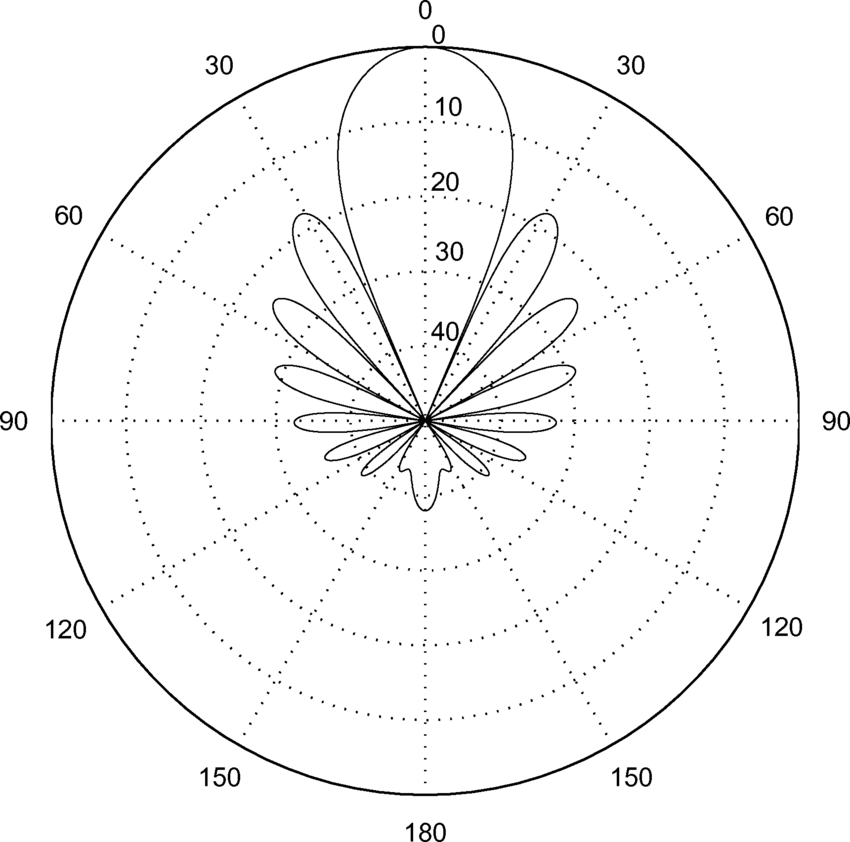
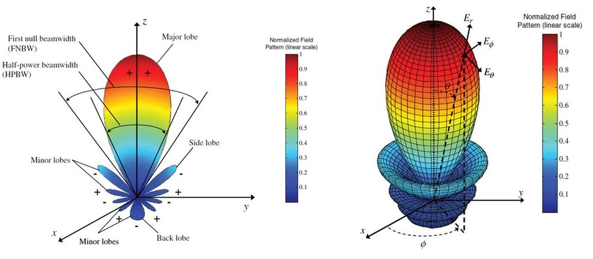

📡 Antennas & Radiation
📶 1. What is an Antenna?
An antenna is a device that converts electrical signals into electromagnetic waves (for transmission) and vice versa (for reception). It is a crucial interface between the electrical circuit and the air.
🧭 2. Key Antenna Parameters
- Gain: Measure of how well the antenna directs energy (in dBi).
- Radiation Pattern: Graphical representation of antenna output in space.
- Directivity: Focus of the radiated power in a particular direction.
- Efficiency: Ratio of power radiated to power input.
- Bandwidth: Frequency range over which antenna performs well.
- Polarization: Orientation of the electric field — linear, circular, or elliptical.

Figure: Examples of omnidirectional and directional radiation patterns.
📡 3. Types of Antennas
- Dipole Antenna: Basic antenna used in many RF applications.
- Monopole: Half-dipole over ground plane — common in mobile devices.
- Patch (Microstrip): Compact, flat, used in mobile/IoT.
- Horn Antenna: Waveguide-fed, directional, used in microwave.
- Parabolic Reflector: High-gain, used for satellite and radar.
- Yagi-Uda: Directional antenna used for TV reception.
📐 4. Antenna Gain & Directivity Formula
Directivity (D) = 4π × Max Power Density / Total Radiated Power
Gain (G) = η × D where η = efficiency (0 < η ≤ 1)
💡 5. Practical Use Cases
- Dipole: FM/TV broadcasting
- Patch: Wi-Fi routers, GPS receivers
- Horn: Radar, microwave links
- Parabolic: Satellite uplink/downlink
🎞️ 6. Antenna Radiation Animation
This animated lobe simulates the radiation pattern of a dipole antenna.
🔍 7. Radiation Pattern Interpretation
Radiation patterns can be plotted in 2D (polar plot) or 3D. Engineers use these to understand how antennas focus energy.

🧪 8. Quiz Yourself
Q1: What is the unit of antenna gain?
Answer: dBi (decibels relative to isotropic radiator)
Q2: Which antenna is ideal for point-to-point microwave?
Answer: Parabolic dish
Q3: What does polarization refer to?
Answer: Orientation of the electric field vector